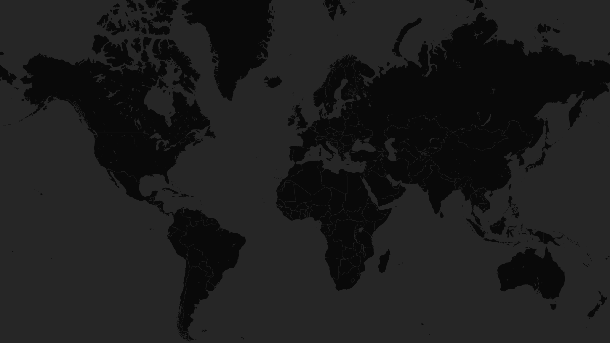

Nuclear states are building up their arsenals: but it's not the usual suspects
by Ratna Rekha Manukonda,
Sandro
Gvindadze and
Haruka Ono
Published on May 11, 2025

China
Military stockpile (2025): 600
United States
Military stockpile (2025): 3700
United Kingdom
Military stockpile (2025): 225
Russia
Military stockpile (2025): 4299
India
Military stockpile (2025): 180
Pakistan
Military stockpile (2025): 170
North Korea
Military stockpil (2025): 50
France
Military stockpile (2025): 290
Israel
Military stockpile (2025): 90
Ukraine
Military stockpile (2025): 0
Japan
Military stockpile (2025): 0
The number of nuclear weapons in the world increased this year for the first time in decades.
China is the clear leader in nuclear expansion, having tripled its nuclear arsenal to 600
warheads in
the
last
six years.
The UK’s expansion is more subtle. It has raised the limit on how many nuclear weapons it can
hold
from
225 to 260.
Ukraine, a country at war, no longer has a nuclear arsenal to expand.
In Japan, the only country ever attacked with nuclear weapons, - survivors are
urging the world not to repeat the past.
This party why the scientists moved the Doomsday
Clock,
which
warns about humanity's danger of self-destruction, closer to the doomsday marker of midnight.
The number of nuclear stockpiles around the world is growing for the first time since 1986. China, India,
Pakistan,
and North Korea are increasing their arsenals.
The United Kingdom has raised its limit on nuclear weapon holdings from 225 to 260.
Global nuclear stockpiles since 1945
*World data consists of total
inventory (military
and retired) of
nuclear weapons.
Country data shows only
military stockpile numbers. Source: Federation of American Scientists
Rob Green, the nuclear regulator at the Environment Agency, doesn’t expect the UK stockpile numbers to
drop
any
time
soon.
“The only time that would ever change is if UK government policy changed, and they said, ‘Well, you know
what?
We don’t need a nuclear weapon anymore.’” he says.
Countries are not dismantling as many
weapons as
they used to, although Russia and the US are still reducing their vast arsenals.
The UK is now prioritizing expansion "without much transparency" about what weapons remain operational
versus
those in storage, says Dave Cullen of BASIC, a nuclear disarmament think tank in London.
And as some countries increase their stockpiles, or slow down the rate at which they decommission, embattled
Ukraine
wants to take back the nuclear weapons it gave up when the Cold War was ending.
Ukraine had the world’s third-biggest nuclear arsenal in 1991 before giving up its weapons as part of
an agreement by the US, UK and Russia.
Now, almost three quarters of Ukrainians want them back according to a 2024 study.
Mariana Budjeryn, is a specialist in Ukraine’s nuclear disarmament and doesn’t believe the arsenal would have
prevented Russia’s
invasion. But she says Ukraine could have protected itself better.
"It was too binary—either give up nukes or not, without considering options in between," Budjeryn argues.
"I'm pretty sure the world would have paid closer attention to Ukraine's borders for fear of its nuclear
program".
Photo from William J. Clinton
Presidential
Library
The promises of the Budapest Memorandum
When Ukraine signed
the
1994 Budapest Memorandum, it surrendered approximately 1,900 strategic nuclear warheads in exchange for
security
assurances from Russia, the US, and the UK.
When Russia annexed Crimea in 2014 and later launched a full-scale invasion,
Ukraine found itself with no nuclear deterrent against an aggressor that had pledged to respect its
borders. In 2022,
President Zelensky bitterly noted that allies had provided only a small amount of diesel fuel, "probably
so
that we can burn the Budapest Memorandum."
While many in Ukraine regret the loss of nuclear weapons, in Japan the survivors of the Hiroshima and
Nagasaki bombings eight years ago are still warning against their use.
“We have to keep telling and recording our stories to let people know what happened” insists Satoshi
Tanaka,
a
member of the Nobel Peace Prize winning survivor group Nihon Hidankyo.
Number of recognised survivors of Hiroshima and Nagasaki bombings, since 1957
The 81-year-old survivor of Hiroshima is concerned that amid the rise of nuclear risk, the number of people
who can
tell
stories of what happens when the weapons are used is dwindling.
Photo provided by Satoshi Tanaka
Loss, Illness, Discrimination: the survivors' fate
Satoshi Tanaka was one year old when his mother brought him into
the destroyed city of Hiroshima the day after the bombing. She took him with her to look for her
parents and relatives who were living about 900m from the epicentre. In the immediate aftermath and in the years that followed he lost eleven members of his family. Survivors were also plagued by discrimination: when Satoshi was a student, a worried flatmate asked him if he was infectious. In his fifties, he was diagnosed with the first of what would
be six cancers. Illness is a constant worry for survivors. And with the rising nuclear threat, Satoshi
says “they are not old
stories.
It
is continuing today”. There were over 370,000 in 1980. Now, there are only just over
100,000. “It is said that
in
ten
years, there will be no survivors left”, says Satoshi.
This article was written as a part of the MSc.
Computational and Data Journalism course at Cardiff University.
The authors would like to thank Rob Edwards, Rob Green, Dave Cullen, Satoshi Tanaka, and Mariana Budjeryn
for their participation, and Aidan O'Donnell and Martin Chorley for their supervision
and guidance.